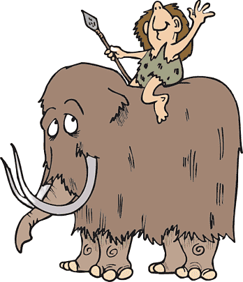

Evoluzione dell'Uomo

L'evoluzione umana è una storia affascinante che si estende per milioni di anni, raccontando come una serie di specie abbia contribuito alla formazione dell'uomo moderno, Homo Sapiens.
Questo sito esplora le principali tappe di questo viaggio evolutivo, a partire dai primi ominidi come l'Australopiteco, fino all'emergere dell'Homo Sapiens.
Ogni specie ha portato con sé innovazioni e adattamenti unici, che hanno plasmato non solo il nostro aspetto fisico ma anche le nostre capacità cognitive e culturali.
Unisciti a noi in questo viaggio nel tempo per comprendere meglio le nostre radici e la straordinaria storia della nostra evoluzione.